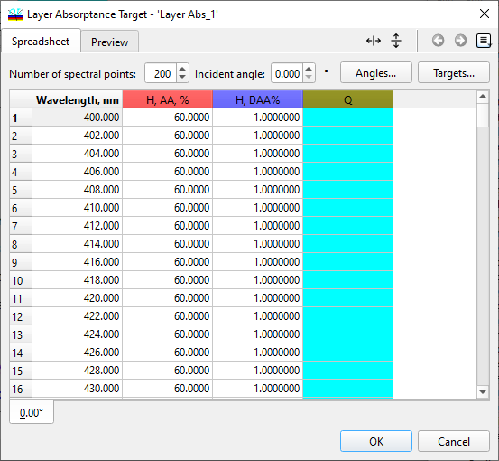
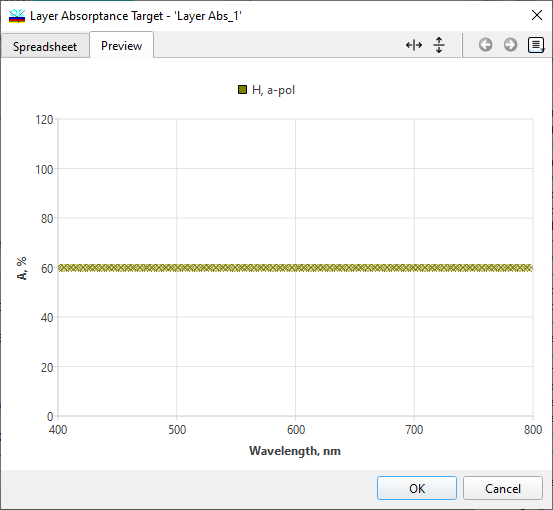

Layer Absorptance Target
Layer Absorptance Target
Navigation: OptiLayer Menu Commands > Data Menu >
Layer Absorptance Target
` <electric_field_target.html>`__ ` <idh_menu_data.html>`__ ` <layer_absorptance_target_selec.html>`__
The Layer Absorptance Target feature enables optimization of the absorptance in layers of a specified layer material or materials. This target can be utilized in all synthesis options, including Gradual Evolution and Needle Optimization, due to its flexible implementation.

The Layer Absorptance Target Editor allows you to specify the following parameters:
Number of spectral points
Incident angle
Distribution of wavelength/wavenumber points
Absorptance target values for each spectral point
Tolerance values for each spectral point
Qualifier for each spectral point (Qualifiers are similar toTarget Editor Qualifiers)
The “Angles” button opens the Angles/Pages dialog, which enables control over multiple angular pages. This allows for specifying different target requirements for each page.
The “Targets…” button opens the Layer Absorptance Target Selection dialog, which assists in specifying the types of target requirements.

The Preview tab enables you to visually inspect the target specifications in a graphical form. This feature provides a visual representation of the specified targets for better understanding and verification.